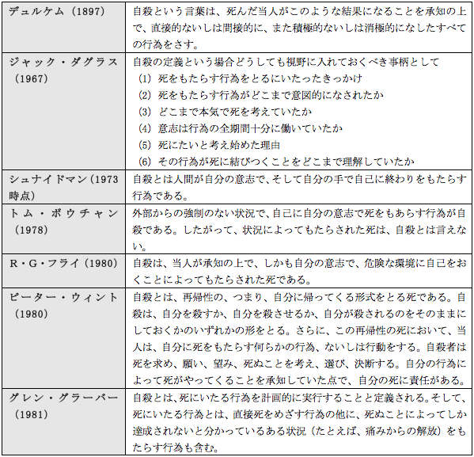

| 「存在することの苦痛」と自殺に関する研究: シュナイドマンとフランクルの視点から | |
| 杉原学 | |
| Sugihara Publishing (2018) | |
Considering Suicide and "Human Malaise" From the Perspective of Frankl and Shneidman
杉原 学
SUGIHARA Manabu
本書は、21世紀社会デザイン研究学会（現社会デザイン学会）学会誌『Social Design Review』Vol.4、2012年12月1日発行、90-100頁に掲載された論文を、電子書籍として編集したものである。
日本は世界有数の自殺大国とされており、年間自殺者数は14年連続で3万人を超えた（警察庁調べ）。2006年に自殺対策基本法が成立してからすでに6年が経つにもかかわらず、自殺者数は一向に減る気配を見せない。もちろん、自殺統計の数字がどれほど正確な自殺者数を反映させているのかについては議論の余地があるが1 、いずれにせよ、自殺の予防が喫緊の課題であることに変わりはない。
筆者は修士論文『自殺予防における「地域の"つながり"の再構築」が果たす役割』の中で、「人間はつながりの中で援助し合う社会的な生き物であること、その頻度や内容は互いの関係性によって変わること、そしてそれらの援助が『自殺の潜在的または顕在的要因』に対処する力を持つということ」（杉原 2011：66）について明らかにした。そしてこのことは自殺予防における「人のつながり」の重要性を示唆しており、そのつながりの本質とは「存在の肯定」であると結論づけた（杉原 2011：111）。つまり、現代日本における自殺の本質的な要因には、「存在することの肯定感」の喪失による、人間存在の不安定化があると言える。短期的・対症療法的な自殺対策ではなく、長期的・本質的な自殺予防を考えるとき、最も重要なのはこの問題であり、この視点をもって「現代における自殺とは何か」について根本的に見直すことが要求されている。
自殺研究の大家として知られるシュナイドマン2 は、自殺について、「『存在することの苦痛』として最も良く理解されると信じている」（シュナイドマン 1993：251）と述べた。後に改めて論じるが、彼が問題にしていたのはまさに近代社会における自殺の問題であり、このことは現在の日本社会にも共通する。むしろこの問題が深刻化していることが、近代社会の延長線上としての構造を持つ現代社会における自殺の本質的課題である。
ここでの近代社会とは、「国民国家、市民社会、資本主義的な経済が三位一体のかたちでつくられた社会」（内山 2009：296）のことであり、マルクスが『経済学・哲学草稿』（原著1844年執筆、1932年刊行）のなかで、そしてパッペンハイムが『近代人の疎外』（原著1959年）のなかで問題にした近代社会である。パッペンハイムはこのような社会を、「個々人は非常にばらばらな孤立したものになっている」（1960：96）と象徴的に述べている。筆者がこれまでの自殺研究の中でシュナイドマンによる定義を採用してきたのは、このような近代社会における自殺を問題にしてきたからにほかならない。
しかし博士論文執筆にあたり、改めてシュナイドマンによる「自殺の定義」について考察した結果、彼の思想と、筆者が修士論文において導き出した結論との差異が浮かび上がってきた。本論文ではこれをより明確にするために、自殺の問題に深く関わり、人間の存在のあり方を問題にしてきた精神科医であるフランクルの視点を交えながら、「近代社会における自殺とは何か」ということについて検討したい。
18世紀以降、社会的・心理的現象としての自殺は、さまざまな分野（社会学、心理学、精神医学、医学など）の研究者の関心事であり続けた。1927年に出版された、H・ロストの『自殺にかんする文献目録』（Bibliographie des Selbstmords ）だけを見ても、主要なヨーロッパの言語で3,000以上の項目がリストされている（ギデンズ 1986：254）。なかでも最も著名なものは、言うまでもなくデュルケムの『自殺論』（原著1897）であろう。その『自殺論』からおよそ一世紀が過ぎようとしていた1985年に、改めて「自殺の定義」の必要性を訴えたのがシュナイドマンであった。
彼は「自殺の定義」を極めて重視しているがゆえに、「自殺を軽々しく定義しようとしてはならない」（シュナイドマン 2005：26）と注意を促している。彼にとって「自殺の定義」とは、臨床的に極めて重要な意味を持ち、単に学問上の理由でつくられるものではなかった。「個人を救済し，全生存を確保するという特別な意味合いが，その定義にかかっている。自殺を定義するという課題は，それだけで１冊の本をまとめるだけの意味がある」（シュナイドマン 2005：26）というシュナイドマンの言葉は、決して大げさな比喩などではない。実際に1985年に出版された彼の著書である"DEFINITION OF SUISIDE "（直訳すると『自殺の定義』だが、日本では『自殺とは何か』として1993年に出版）の内容のほとんどは、自殺の定義のために費やされている。彼の自殺学の思想は、この「自殺の定義」に集約されているといってよい。
とはいえ、シュナイドマン以前にも数多くの自殺の定義が提案されてきたことは言うまでもない。その一例として、シュナイドマンは表１の例を紹介している。
彼が「新しい定義」の必要性を強く主張した理由には、既存の「自殺の定義」に対する不満があったことは言うまでもない。だが、たとえデュルケムの定義が、その時代における非の打ち所のないものであったとしても、シュナイドマンはやはり「新たな自殺の定義」を求めたに違いない。なぜなら彼は、「自殺という言葉が何を意味するかは 、自殺をする人にとってもそれを目撃する人々にとっても、時代によって大きく異なる 」（シュナイドマン 1993：244、強調引用者）と信じていたからである。そのことを裏付けるように、彼は自らの定義に対しても、「やがては時代遅れとならざるをえないし、そんなに遠い昔とは言えない十九世紀の自殺に適用しようとすれば、すでに適切な修正が必要となる」（シュナイドマン 1993：244-245）と述べている。
この言葉からもわかるように、シュナイドマンはその時代の変化が一般的に思われているよりも早く起こっている、あるいは変化の速度が加速していると考えていた。だからこそ彼は、時代性という要素を定義の文言の中にも含んでいるのである。「自殺という、すでに時代を経た話題に関してこういうのははなはだ奇妙に聞こえるかもしれないが、自殺に関して、今日緊急に必要とされているものは定義である」（シュナイドマン 1993：ⅲ ）という彼の言葉は、「自殺と時代の関係」に対する認識が、一般的な感覚と大きく乖離していたことを、彼自身が感じていたことを物語っている。
このようなことからも、自殺予防においては、現在的な自殺をとらえうる現在的な自殺の定義が必要である、というシュナイドマンの問題意識を読み取ることができる1 。この問題意識に筆者も同意するし、時代の変化の速度がますます加速しているように思える今日、シュナイドマンのこの言葉はいま一度注目されてよい。
表１ デュルケムから20世紀における自殺の定義のいくつか

（シュナイドマン 1993：20-24）をもとに筆者作成：2012
シュナイドマンは、「ささやかな予防の行為が生命を救う上で計り知れない効果を発揮する」（1993：295）として、自殺の「予防」の重要性を強く主張していた。⏎
さて、シュナイドマンが『自殺とは何か』の中で導き出した自殺の定義は、次のようなものである。
「今日の西欧社会において、自殺は、自ら手を下した意識的行為によってもたらされた死とされる。その行為は、死ぬことが最良の解決法と認識された出来事に直面し、窮地を脱することを願った人物の、多くの次元をもった苦痛によってもたらされる、と考えると理解しやすい」（シュナイドマン 1993：244）
シュナイドマンは、この定義の一語一語に対して非常に詳細な解説を加えている。それらを分析し、他の研究者による自殺の定義と比較すると、次の3つの特徴が指摘できる。
（1）時代と場所（文化圏）の限定
（2）「存在することの苦痛」に自殺の要因を見出している
（3）あらゆる自殺を理解することはできないとする思想
この3点は相互に関連し合っているが、順を追って考察していくことにする。
（1）時代と場所（文化圏）の限定
彼はこの自殺の定義を「西欧社会にだけ通用するもの」（シュナイドマン 1993：244-245）と断っている。ただし、それは単に地理的な範囲について述べているわけではないことに注意しなければならない。なぜなら彼は一方で、「一定の状況のもとではおそらく日本を含むいくつかの国にも通用するであろう」（シュナイドマン 1993：244-245）とも述べているからである。つまりこの定義では文字通り「西欧社会における自殺」を問題にしているというよりも、「近代的様式を持った社会における自殺」を問題にしているととらえたほうがよい。この認識の中にもすでに時代性が含まれているが、定義の冒頭にある「今日の」という言葉によってそのことを明確に表現している。
（2）「存在することの苦痛」に自殺の要因を見出している
シュナイドマンは、定義の中にある「苦痛」という言葉を次のように解説している。
「自殺はウイルスや細菌による疾患と並べられるものではなく、『存在することの苦痛』として最も良く理解されると信じている。自殺は状態であり、存在し続けることに耐え難い苦痛を感じる状態である」（シュナイドマン 1993：251）
シュナイドマンは、自殺のキーワードは「死」ではなく、「心の苦痛」であると考えていた（シュナイドマン 2005：25）。このことが「近代社会における自殺」の特徴としてとらえられていることは、シュナイドマンの自殺の定義の変遷からも推察される。
先に示したシュナイドマンによる自殺の定義は1985年のものだが、これに先立つ1973年にも、彼は自殺の定義を提出している1 。当時の定義は、シュナイドマンによると次のようなものであった。
「自殺とは人間が自分の意志で、そして自分の手で自己に終わりをもたらす行為である」（シュナイドマン 1993：20）
シュナイドマンは、「その定義に満足しているわけでは決してない」としながらも、「スタート地点でご紹介する定義としてなら、それでもよいと考えた」（1993：20）。その言葉の通り、この定義は1985年に提示した新しい定義の基盤、すなわちスタート地点と言えるものであった。この二つの定義の間の変化とは、端的に言えば「時代と場所（文化圏）の限定」と、「苦痛」という心理的要素の追加である。新しい定義では、「今日の西欧社会において」（1993：244）という言い方で「近代社会」の問題であると限定し、それと並行して「多くの次元をもった苦痛によってもたらされる」（1993：244）と特徴づけられている。つまりシュナイドマンにとって、この「多くの次元をもった苦痛」、すなわち「存在することの苦痛」（1993：251）こそが、近代社会における自殺の問題の核心だったのである。
（3）あらゆる自殺を理解することはできないとする思想
一般的に「定義」には断定的な表現が用いられる。それは二重概念となることを防止する意味合いが大きい。だがシュナイドマンの定義は、「......と考えると理解しやすい（best understood as a ......）2
」という表現をとることで、主観的断定を慎重に避けている。これは他の一般的な定義には見られない、非常に大きな特徴である。これを理由に、彼の定義を「学術的な使用に耐えない」と批判することは簡単である。だが筆者はむしろこの点において、彼の定義を評価している。
シュナイドマンの主張は、「あらゆる自殺を説明し尽くす単一の理論はない」（シュナイドマン 1993：250）というものであり、「自殺は生物学的、生化学的、社会文化的、社会学的、対人的、心理的、哲学的、存在論的出来事」なのである（シュナイドマン 1993：250）。そして彼にとって自殺者の苦痛とは、定義にあるように「多くの次元をもった 」（1993：244、原文は傍点強調）苦痛であった。これらをひとつの普遍的な定義によって定めてしまうことは、彼が目指した「臨床で役立つ定義」ではありえなかったのである3 。彼のこうした信念は、学術的な研究の結果というよりも、臨床的な直観から得られたものであると思われる。
1973年の『ブリタニカ百科辞典』に掲載された（シュナイドマン 1993：20）。⏎
原著記載は次の通り。"Currently in the Western world,suicide is a conscious act of self-induced annihilation,best understood as a multidimensional malaise in a needful individual who defines an issue for which the suicide is perceived as the best solution. "（Shuneidman 1985：203）。⏎
フランクルもこの点について、「精神療法において、そのつど、どのような方法が選択されるかは、患者の一回性と唯一性、医師の一回性の両方を計算に入れないと成り立たない」という表現で指摘している（フランクル 2011：5）。⏎
ここまで述べてきたように、シュナイドマンは近代社会における自殺の核心を「存在することの苦痛」（シュナイドマン 1993：251）であると考え、それを自らの自殺の定義の中に組み込んだ。このような定義は非常にユニークなものであるが、それは彼が臨床的な視点から自殺の定義を検討した結果にほかならない。彼は次のように述べる。
「自殺の治療を総合的に考える場合、定義ということがもっとも重要な問題となる。私が自殺の定義を実際の役に立つように、また、臨床的な視点からはなそうとしているのはそうした理由からである」（シュナイドマン 1993：24）
つまり、「そのことに目を向けなければ、自殺予防の実践では通用しない」という要素の集積が、彼の自殺の定義なのである。にもかかわらず、この「存在することの苦痛」（シュナイドマン 1993：251）ということについては、自殺予防においてあまり目が向けられてこなかったのではないだろうか。このことの重要性を強く主張したシュナイドマンの功績は極めて大きい。
しかし筆者は、彼にも問題を見誤っていた部分があると考える。シュナイドマンは、「自殺学は臨床に役立つ定義を絶えず求めつつ、常に失敗に終わる歴史を繰り返してきた」（1993：237）と嘆いたが、この歴史は今も続いているように見える。それはなぜか。
シュナイドマンは確かに「存在することの苦痛」（1993：251）という近代社会における自殺の本質的要因に注目したが、それを最終的には「個人の問題」とし、「すべての自殺は個人的な行為である」（シュナイドマン 2005：17）と考えた。このことに、彼の自殺学の限界があったと言える。シュナイドマンの自殺学に対して同様の批判を展開している文献は、筆者の調べた限りにおいてはまだ見つかっていない。
シュナイドマンの主張は次のようなものであった。
「自殺を決意するということは、社会とそこに住む人々の影響下に起った心の中の出来事なのであるから、個々の自殺の予防も、個々の心の状態を変えることに焦点を当てることが最も効果的である」（シュナイドマン 1993：288）
彼はこれに加え、「周囲の状況が短時間に変えうるものならば、状況を変えることも有力な助けとなろう」と述べ、「治療者と患者の役に立つものがあればあらゆる方法が用いられて良い」（シュナイドマン 1993：288）と補足してはいるものの、やはり関心の焦点は、個人の心の状態を変えるということにあった。
筆者は修士論文においてシュナイドマンの自殺の定義を用いたが、この点においては異なる見解を導き出した。それは本論文の冒頭でも述べたように、自殺予防の実践において主軸となるのは、「人のつながりの再構築」だということである。つながりの喪失が自殺多発社会の温床であり、それは「社会の資本主義化」という近代社会形成のプロセスの中で進行していった。ここから結論づけられるのは、個々の心ではなく、人と人との「関係」に焦点を当てることが、自殺予防の核心だということである（杉原 2011）。
近年さまざまなところで「人と人とのつながりの重要性」が言われるようになってきたが、これが単に「経済的な相互支援」や、「精神的な安心感」としてのみ理解されるとすれば、それは本質的ではない。「人のつながり」とは、「人間の存在とは何か」といった実存的な視点からの要求であると見るべきであろう。筆者はそれを「存在の肯定」（杉原 2011：111）と表現した。
この点を明確にするには、「存在することの苦痛」ということについて、より深い考察が必要である。そこで、シュナイドマンと同じく臨床の立場で「人間の存在とは何か」という問題を実存1 的視点から考察し、「実存的精神療法」を確立したフランクルの知見からの分析を試みたい。
現実的な存在。普遍的な本質ではなく時間・空間内にある個体的存在。スコラ哲学以来、本質に対比して用いられ、可能的な本質が現実化されたもの。特に人間的実存を意味し、自己の存在に関心をもつ主体的な存在、絶えざる自己超克を強いられている脱自的存在をいう。自覚存在。新村出編，1998，『広辞苑 第五版』，岩波書店（1194頁）を参照。⏎
フランクルは、フロイト、アドラーの後を受けて、ウィーン第三学派と称されるロゴセラピー1 を創始し、実存（ないし人間性）の立場に立つ精神療法を唱えた精神科医である（フランクル 2011：著者・訳者紹介）。彼は、どのような状況にあっても人間は生きる意味を見出せると主張し（フランクル 2011）、自らがナチスの強制収容所という極限状態を体験したことで、その思想をさらに深めていった。また自殺予防に強い関心を持っており、ウィーンではアドラーの児童相談所をモデルとした自殺防止運動に打ち込み（クリングバーグ 2006：107）、テレージエンシュタットの収容所ではロゴセラピーのアプローチを生かして、ゲットー内で自殺防止チームを組織して活動した（クリングバーグ 2006：190）。
「あらゆる自殺を説明し尽くす単一の理論はない」（シュナイドマン 1993：250）と述べたのはシュナイドマンであったが、この考え方はフランクルの精神療法にも共通する。フランクルは次のように表現している。
「われわれは、一つの絶対的真理を直接理解することができない以上、相対的な真理を相互に修正することで満足しなければならないのである 」（2011：6、原文は傍点強調）
この二人の考え方はいずれも臨床的直観に基づいており、臨床的に役立つ理論を求める姿勢として共通している。特にフランクルの場合、この考え方は還元主義の否定と結びついている。フランクルは、「人間という多元的かつ精神の自由を有する人間存在を一定の単純な要素ないし原理に還元する科学主義」を、人間性を否定するものとして批判している（フランクル 2011：73）。では、フランクルは人間の存在をどのようにとらえていたのか。彼は次のように説明している。
「一つの存在者は他の存在者と関係づけられることによってはじめて、両者は本質的に存在しうるのである。それぞれ互いに他の存在者であるものとしての存在者間の関係が、ある意味で存在者に先行している。存在は他在である。言い換えれば、存在は関係としての他在であり、本来ただ関係なので『ある』。したがって、われわれはこれを次のようにも定式化することができる。あらゆる存在は関係存在である、と」（フランクル 2011：25）
これにはさらなる説明が必要であるように思う。フランクル研究の第一人者である哲学者の山田邦男は、このフランクルの思想を、西田幾太郎の言う「主客未分」と同様にとらえる。これは、「存在を知的・対象的に認識するということではなく、存在と人間とが分かれる以前の非知的・非対象的な合一」の状態である（山田 2009：229）。自分以外の他の何ものかの元に「ある」というそのことを、フランクルは「Bei-sein（バイザイン・～の元にあること）」、あるいは「自己超越」という言い方で表現し、「実存の本質は自己超越にある」と考えたと山田は述べる（NHK「こころの時代」2012年5月28日放送）。
このような視点から見れば、人間の存在を「個人」としてのみとらえること自体が、実は還元主義的思考だと言うことができる。この点において、人間の存在を個体性の中でとらえたシュナイドマンと、「関係存在」としてとらえたフランクルとの思想の違いを見ることができる。
この「関係存在」ということが人間の本来のあり方なのだとすれば、「自己超越」なき存在の状態は、「存在することの苦痛」を生む要因となり得ると考えるべきであろう。筆者は修士論文において「つながりの本質は存在の肯定である」（2011：111）と述べたが、これは「関係存在」としての人間本来のあり方を回復することであり、自己と他者の「相互の自己超越」（山田 2009：192）の契機となるものである。「存在の肯定」とはフランクルの言葉を使えば、存在することの「意味発見」（フランクル 2011：106）であり、人と人のつながりがそれを促すのである。
このような観点から、フランクルの思想が個人と共同体の関係に及んだことは当然である。彼は共同体について、「個人的実存が有意味になるためには共同体2 を必要としているだけでなく、反対に、共同体そのものも、それが意味をもつためには、個人的実存を必要としている」（フランクル 2011：154-155）と述べた。これは関係存在としての人間のあり方の提示であり、こうした共同体の喪失が、近代社会の特徴である「存在することの苦痛」、フランクルの視点で言えば生きる意味の喪失（フランクル 2011）としての自殺の温床となっているのである。
フランクルが「多元的かつ精神の自由を有する人間存在」（2011：73）と述べたように、人間とは多様な存在であり、それは「関係の多様性」に起因する。その裏返しが、シュナイドマンの定義にある「多くの次元をもった苦痛」（1993：244）という言葉に表現されているとすれば、それを克服するために必要なのは「多様な存在を肯定する、『多様なつながり』」（杉原 2011：111）に焦点を当てることなのである。
本論文では、シュナイドマンの「自殺の定義」を分析し、フランクルの視点から批判することで、「存在することの苦痛」と自殺の関係について考察してきた。その中で見えてきたのは、近代化にともなう「つながりの喪失」と、その再構築の必要性であった。だがその「つながり」という点において、フランクルは別の視点から重要な問題を提起している。それは、「人間存在は、何よりもまず本質的に歴史的存在であり、つねに歴史的空間の中に置かれており、この座標系から逃れることはできない」（フランクル 2011：80）ということである。彼はこの問題について次のように指摘する。
「今日、人間は本能の乏しさに苦しんでいるだけではなく、伝統の喪失にも苦しんでいる。今ではもはや、本能は人間に何をしなければならないかを告げず、また伝統も人間に何をなすべきかを告げることがなくなっている」（フランクル 2011：12）
「関係存在」としての人間は、「現在的な空間軸のつながり」だけでなく、「歴史的な時間軸のつながり」があってこそ存在している。それは例えば先祖とのつながりであり、自分が生まれ育ってきた風土の歴史とのつながりである。そうした歴史的空間の中に、現存在の「歴史的な有意味性」（フランクル 2011：81）があるとフランクルは考えた。そして「存在の肯定」ということを考えたとき、「現在的な空間軸のつながり」に多様性が求められるのと同様に、「歴史的な時間軸のつながり」の多様性もまた求められるのではないか、と問わざるをえない。そうした時間軸の多様性をも喪失させてきたのが近代という時代であった。近代化は人間の多様な生き方を可能にしたようなイメージを作り出してきた。だが一方で、高度成長期の日本の農村を歩き続けた大牟羅良は次のような言葉を残している。
「私の見て来たかつての農村には、それぞれの村に、それぞれの文化があったように思われた。しかしそれが年毎に失われつつあるように思う。いわゆる資本主義的大量生産方式による生活物資が、大量消費をマスコミを動員して押しつけて来、農村の生活自体も、ものの考え方すらも画一化されつつあるようにさえ思えたりする。......それぞれの個性を持っていた農村生活も、現在は何か生活の隅々までお仕着の生活に変わっているように思えてならない」（大牟羅 1971：90-91）
このような変化の中で、先祖とのつながりを感じる機会は激減し、地域の歴史を学ぶ機会は国家や世界の歴史を学ぶ機会に置き換えられた。それは風土の歴史とともに生きる人生観の喪失であり、多様に存在した歴史的時間軸の喪失でもあった。そして人と人とのつながりをも喪失したとき、「関係存在」としての人間の存在はますます不安定化していったのではなかったか。
最後に、シュナイドマンとフランクルについて少しだけ述べておきたい。シュナイドマンは確かに、自殺予防において個人としての人間に焦点を当てたが、彼はおそらく、最終的には「関係存在」としての人間のあり方を直観していた。彼は晩年まで自らの考えを検討し続け、死を自分自身の課題として見つめた。そして亡くなる三年前、愛弟子である高橋祥友にこう語っている。「私がここまで生きてこられたのは、誰かと一緒に生きてきたからだ。人はひとりでは生きていけない、孤独ではいられないんだ」（シュナイドマン 2009：257）。彼がもし晩年にもう一度「自殺の定義」を提案したなら、この要素を必ず明確な形で取り入れただろう。
またフランクルにおいては、筆者はその思想を無条件に受け入れるものではない。彼の人間観は、「『ある』〔存在〕ことと、『ある-べし』〔当為〕ということの間の緊張」（フランクル 2011：139）の状態を前提する実存的人間観であり、そのことが「関係存在」としての人間観と結びついているが、筆者は必ずしもこの点に同意しない。筆者が考える「存在の肯定」とは、あるがままの「存在」そのものの肯定を意味しているからである。この点について論じるには「自我の肯定」と「自我の否定」という二つの思想的根拠について明確にする必要があるが、それについては今後の研究の課題としたい。
■参考文献・資料
A.ギデンズ（宮島喬，森反章夫他訳），1986，『社会理論の現代像』，みすず書房。
内山節，2009，『清浄なる精神』，信濃毎日新聞社。
E.デュルケム（宮島喬訳）, 1985, 『自殺論』, 中央文庫（原著1897）。
E.S.Shuneidman，1985，"DEFINITION OF SUICIDE "，A Wiley-Interscience Publication：New York，Chichester，Brisbane，Toronto，Singapore．
E.S.シュナイドマン（白井徳満，白井幸子訳），1993，『自殺とは何か』，誠信書房（原著1985）。
E.S.シュナイドマン（高橋祥友訳），2005，『シュナイドマンの自殺学 自己破壊行動に対する臨床的アプローチ』，金剛出版。
E.S.シュナイドマン（高橋祥友訳），2009，『生と死のコモンセンスブック シュナイドマン90歳の回想』，金剛出版。
F.パッペンハイム（栗田賢三訳），1960，『近代人の疎外』，岩波新書（原著1959）。
H.クリングバーグJr.（赤坂桃子訳），2006，『人生があなたを待っている１』，みすず書房。
マルクス（城塚登、田中吉六訳），1964，『経済学・哲学草稿』，岩波書店（原著1844年執筆，1932年刊行）。
NHK Eテレ，「こころの時代 ―生きる意味を求めて ヴィクトール・フランクルと共に―」，2012年5月28日放送。
大牟羅良，1971，「これが農村の近代化か？！」祖父江孝男編，『現代のエスプリ 日本人 その構造分析』，至文堂。
杉原学，2011，『自殺予防における「地域の"つながり"の再構築」が果たす役割』,立教大学大学院21世紀社会デザイン研究科修士論文。
V.E.フランクル（山田邦男監訳，岡本哲雄，雨宮徹，今井伸和訳），2011，『人間とは何か』，春秋社（原著初版1957〔邦訳『死と愛』〕、以後改稿を続け本書が最終版）。
山田邦男，2009，『フランクル人生論 苦しみの中でこそ、あなたは輝く』，PHP研究所。
■著者プロフィール
杉原 学（すぎはら まなぶ）
1977年大阪生まれ。四天王寺国際仏教大学（現四天王寺大学）文学部中退。立教大学大学院21世紀社会デザイン研究科博士前期課程修了、後期課程中退。社会デザイン学修士。哲学専攻。研究テーマは「人間と時間との関係」。現在は執筆、研究、歌手活動などを行っている。共著に内山節編著『半市場経済』（第三章「存在感のある時間を求めて」執筆。角川新書）。杉原白秋名義で『考えない論』（アルマット）、『文筆家の分泌物』、『疾走しない思想』、『独唱しながら読書しろ！』（Kindle本）などがある。地域づくり情報誌『かがり火』にて対談企画「そんな生き方あったんや！」連載中。楽曲はユーチューブで公開。世界で最も非生産的な会議「高等遊民会議」世話人。社会デザイン学会、日本時間学会会員。
【杉原白秋オフィシャルブログ】
https://ameblo.jp/manabook/
【杉原白秋ツイッター】
@sugihaku
【杉原白秋著書一覧】
https://goo.gl/159mFt
■『考えない論 悩まなければ答えが見つかる！』（アルマット）
https://www.amazon.co.jp/dp/4877316655
■『読むだけで神経が図太くなる！「伝説の親父」の奇行録 〜時々オカン〜』
https://www.amazon.co.jp/dp/B07B26MSSF
■『文筆家の分泌物』
https://www.amazon.co.jp/dp/B07BNPFKXT
■『疾走しない思想「人間は、弱い生き物なのだ」と仮定する。』
https://www.amazon.co.jp/dp/B07C63HTKQ
■『独唱しながら読書しろ！杉原白秋の読書感想文』
https://www.amazon.co.jp/dp/B07DPKVC79
■『読んでもためにならない映画鑑賞ノート』
https://www.amazon.co.jp/dp/B07DSGVYQ9
【杉原学論文一覧】
https://goo.gl/159mFt
■『自殺予防における「地域の"つながり"の再構築」が果たす役割』
https://www.amazon.co.jp/dp/B07FGDT84Z
■『東日本大震災の被災地における自殺予防の考察』
https://www.amazon.co.jp/dp/B07FGW6L9T
■『「存在することの苦痛」と自殺に関する研究 シュナイドマンとフランクルの視点から』
https://www.amazon.co.jp/dp/B07DYNYCQ6
■『コミュニティにおける「関心」と「時間」についての考察』
https://www.amazon.co.jp/dp/B07DYZSN6C
■『人間の個人化と未来への不安』
https://www.amazon.co.jp/dp/B07DZLXJTW
■『「ヴァナキュラーな暦」としての自然暦』
https://www.amazon.co.jp/dp/B07DZSB83Q
■「存在することの苦痛」と自殺に関する研究 シュナイドマンとフランクルの視点から
2018年6月23日 初版発行（初出：21世紀社会デザイン研究学会（現社会デザイン学会）学会誌『Social Design Review』Vol.4、2012年12月1日発行、90-100頁）
著者：杉原学
発行：杉原学
制作・編集：杉原学
Copyright©2018 SUGIHARA Manabu
この書籍に関するお問い合わせ先：sugimana.55@gmail.com